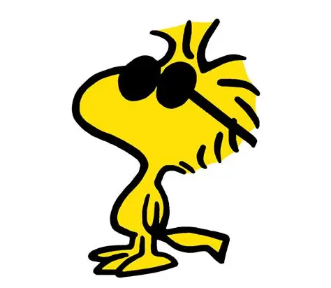
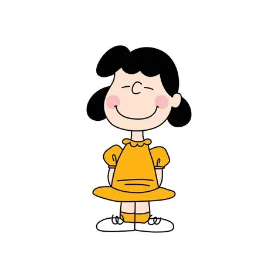
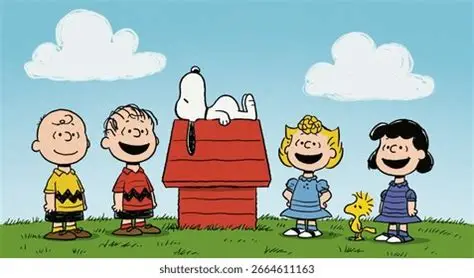

Charlie Brown
Charlie Brown es uno de los personajes principales de Peanuts. Es conocido por ser amable, tranquilo y por enfrentar diferentes situaciones que forman parte de sus aventuras junto con sus amigos.


Woodstock
Woodstock es un pequeño pájaro amarillo que es uno de los mejores amigos de Snoopy. Aunque es pequeño, tiene una personalidad muy característica y acompaña a Snoopy en muchas de sus aventuras.
Lucy
Lucy van Pelt es uno de los personajes más conocidos de Peanuts. Tiene una personalidad fuerte y segura de sí misma. También es amiga de Charlie Brown y participa en muchas de las situaciones de la historieta.

Justificación
Elegí hablar sobre los personajes de Peanuts porque cada uno tiene una personalidad diferente. Snoopy, Charlie Brown, Woodstock y Lucy forman parte de un grupo de personajes que han entretenido a muchas personas. Sus diferencias hacen que las historias sean divertidas e interesantes.
Enlaces de referencia
Personajes oficiales de Peanuts Sitio oficial de Peanuts Información sobre Peanuts